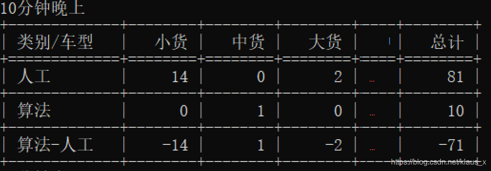

python中经常用到的表格形式输出
python中经常会去读一些数值，或者文件内容之类的，经常用的就是print函数，有时候希望可以以表格形式输出，显示比较方便，比较简单的就是tabulate功能
1.需要包含的库
from tabulate import tabulate
import wcwidth
- 1
- 2
其中wcwidth解决中文不对齐问题，在cmd中显示就会有调整，需要按照，pip安装一下然后import一下就没问题了。
2.表格内容
主体结合一个例子
table_header = ['小货','中货','大货','总计']
a= [小型货车,中型货车,大型货车,总计]
- 1
- 2
打印时需要设定表头，然后a是一个list类型的，输出打印表格
print(tabulate(a, headers=table_header, tablefmt='grid'))
- 1
tablefmt是设置表格形式，有很多种，挑一个自己喜欢的就行
"plain" "simple" "github" "grid" "fancy_grid" "pipe"
"orgtbl" "jira" "presto" "psql" "rst" "mediawiki" "moinmoin"
"youtrack" "html" "latex" "latex_raw" "latex_booktabs" "textile"
- 1
- 2
- 3
上面上面将会输出一个2*4的一个表格，可能我想要输出多行，比如不同地方的数字b,c,d,e，只需要保证b,c,d,e是list类型，输出打印的时候串一起就行，如
b= [小型货车1,中型货车1,大型货车1,总计1]
print(tabulate([a,b], headers=table_header, tablefmt='grid'))
- 1
- 2
list’类型的，当然也可以用append，其实道理和上面一样
a= [小型货车,中型货车,大型货车,总计]
b= [小型货车1,中型货车1,大型货车1,总计1]
list = []
list.append(a)
list.append(b)
print(tabulate(list, headers=table_header, tablefmt='psql'))
- 1
- 2
- 3
- 4
- 5
- 6
3.更高级一点的表格
加如行列注释的那种
a = [小型货车,中型货车,大型货车,总计]
b = [小型货车1,中型货车1,大型货车1,总计]
c = [小型货车-小型货车1,中型货车-中型货车1,大型货车-大型货车1,总计-总计1]
A = pd.DataFrame([b,a,c],index=['人工','算法','算法-人工'])
A.columns = ['小货','中货','大货','总计']
A.index.names = ['类别']
A.columns.names= ['车型']
h = [A.index.names[0] +'/'+ A.columns.names[0]] + list(A.columns)
- 1
- 2
- 3
- 4
- 5
- 6
- 7
- 8
其中index为列索引内容，columns为行索引内容
A.index.names = ['类别']
A.columns.names= ['车型']
- 1
- 2
为2个索引头，最后会合并在一起，最后让我们看看效果

我这个表格比较长，我省略了一部分


![]()

![]()


 631
631